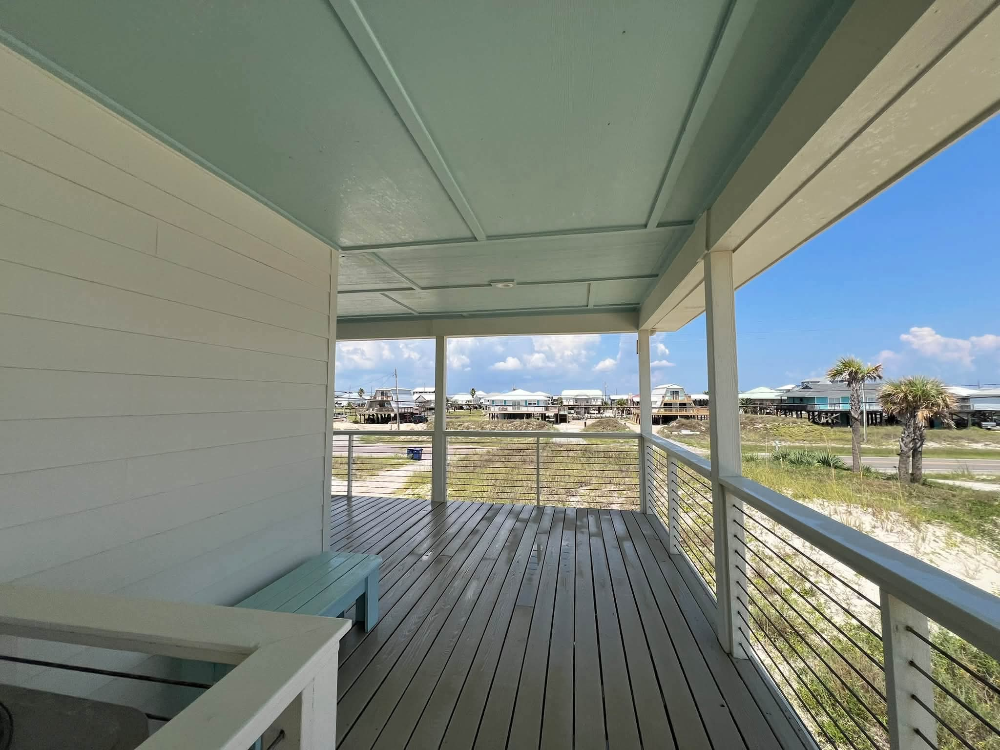

From the blog
Christmas Ready in Mobile, AL: Exterior Cleanup Before You Hang the Lights
November 23, 2026

Thanksgiving is this week, and Christmas lights will start going up all over Mobile right behind it. Before you climb the ladder with a string of lights, take a hard look at the outside of your house. Lights look twice as good on a clean home, and a dirty porch or green siding will show up in every photo your guests take. Here is the order we recommend, from top to bottom, so nothing you clean gets dirty again.
Start with the roof and gutters
Fall leaves have been filling gutters all over West Mobile, Midtown, and Saraland. Packed gutters overflow in a winter rain and stain the siding below. A gutter cleaning runs $179 and clears the leaves, pine needles, and grit so water drains where it should. While you are up there, look at the roof. Dark streaks are usually algae, and a soft wash takes them off gently without damaging shingles.
Wash the house
This is the big one. A full house soft wash removes the algae, mildew, and grime that Mobile humidity leaves on siding all year. It runs from $349 for a 1,000 sq ft home to $899 for a 4,000 sq ft home, and a two story home doubles the price. Do this before you hang lights, because clean siding makes white lights pop and colored lights look richer. It also means you are not clipping lights onto a layer of mildew.
Clean the windows
Christmas lights shine through windows, and so does every smudge. A professional window cleaning covers the glass inside and out, plus the frames and sills. Up to 10 windows runs $129. If you are putting a tree in the front window or a wreath on the glass, clean windows make the whole display look finished.
Scrub the porch and walkway
Your porch is where guests arrive, where packages land, and where the wreath hangs. A pressure wash takes the algae and leaf stains off concrete and wood so the porch looks cared for instead of forgotten. The walkway matters too. It is the first thing people step on, and a slick, green walkway is a slip risk when the evening dew settles.
Finish with the driveway
Save the driveway for last. It catches the runoff from everything above it, so washing it first just means washing it twice. A clean driveway frames the whole house and makes the lights, the wreath, and the porch display stand out. It is also where guests park, so it is worth the effort.
Book before the December rush
Every year the same thing happens. The first week of December fills up fast with homeowners in Daphne, Spanish Fort, Fairhope, Semmes, and Theodore who all want the same thing: a clean house before the family arrives. If you want it done before your lights go up, book now while there is still room on the schedule. A clean exterior, warm lights, and a fresh wreath is the whole look, and it starts with the wash.
Want your home Christmas ready?
Kinney Cleaning Services does house soft washing, gutter cleaning, window cleaning, and pressure washing across Mobile County and the Eastern Shore. Veteran owned and operated, with 5-Star Google Reviews.
Call (251) 767-0754 Get a Custom Quote